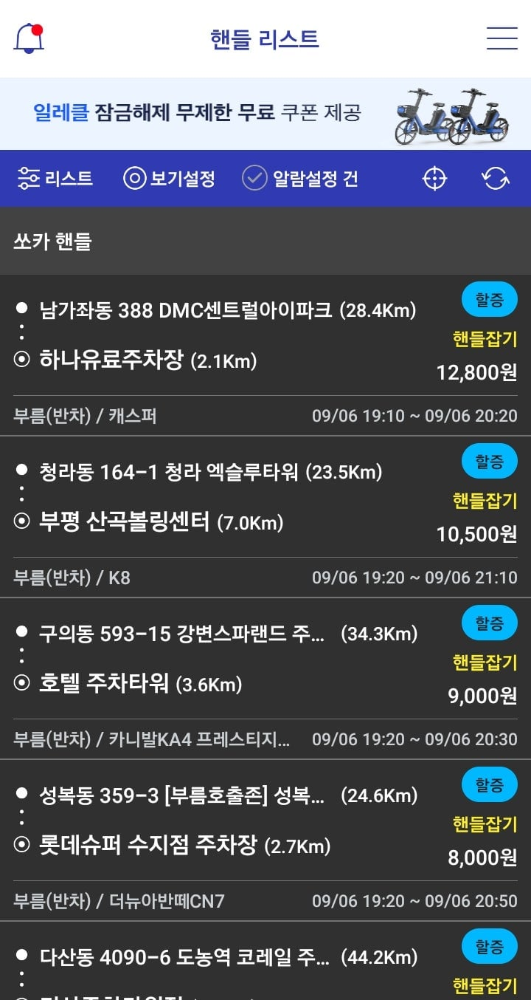
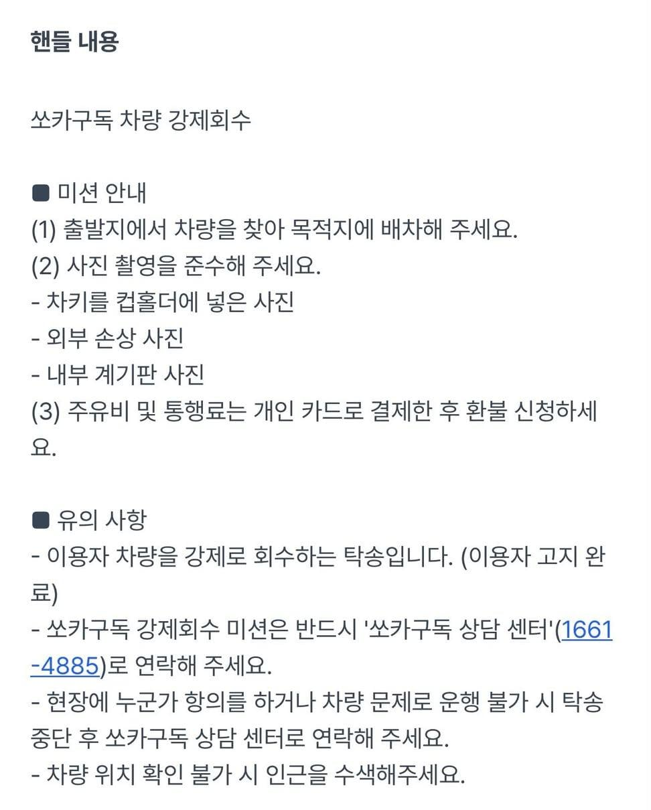
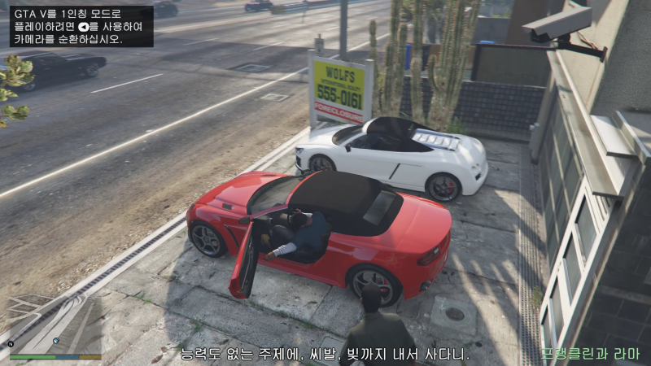

쏘카에는 핸들러라는 탁송 알바 프로그램이 있다.
주로 쏘카부름 등으로 탁송을 받을 시 차를 갖다 주거나 회수하는 역할이다
그런데 가끔 엄청 위험한 미션이 뜰 때가 있는데

바로 쏘카구독(중장기 렌트 프로그램) 이용료 미납 고객의 차량을 강제 회수하는 역할이다
보수는 큰 편이지만 차가 있어야 할 자리에 없다거나 심지어는 치 빌려간 고객이 기다리고 있다가 흉기로 위협하는 경우까지도 있다고

ㅋㅋㅋㅋㅋ